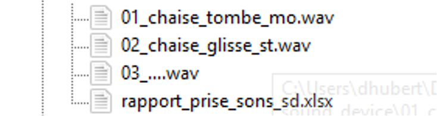

Projet A - Banque de sons (30%)¶
 Source: socialmediapro.fr
Source: socialmediapro.fr
- Travail d’équipe | Fichiers audionumériques et rapport de prise de sons (fichier Excel)
- Date de remise : Cours 06
OBJECTIFS D’APPRENTISSAGE¶
Réaliser des enregistrements sonores de qualité.
TÂCHE¶
Vous devez enregistrer des sons évocateurs et de qualité, et remplir un rapport de prise de son.
CONSIGNES¶
Enregistrer une quinzaine de sons différents et évocateurs avec un Sound Device:¶
3 prises de son en plan éloigné (paysage sonore) :¶
- Trois paysages sonores différents (ex. intérieur, extérieur… cafétéria, forêt, ville…) d’environ 2 minutes.
- Une de ces prises doit être enregistrée de façon stéréophonique.
9 prises de son en plan rapproché (objets et instruments sonores) :¶
- Sept de ces prises doivent être des objets sonores divers de 15 secondes maximum (ex. ouverture d’une porte, « zipper »…).
- Deux de ces prises doivent être enregistrées de façon stéréophonique.
- Deux de ces prises doivent être l’enregistrement d’environ 1 minute d’instruments de musique (ex. guitare acoustique, piano acoustique…).
Pour chaque membre de votre équipe, une entrevue de 2 à 3 min décrivant un rêve ou un cauchemar significatif personnel.¶
- L’enregistrement doit être fait dans le petit studio.
Remplir rigoureusement le rapport de prise de sons fourni et décrire vos observations pour chacun des sons (se référer au fichier Excel en annexe).¶
La qualité technique des enregistrements (observation 1) :¶
Décrire par exemple :
- la qualité du niveau d’enregistrement
- le rapport signal-bruit…
- le choix du lieu d’enregistrement
- le positionnement du microphone.
La qualité de la matière sonore des sources choisit (observation 2) :¶
Décrire par exemple :
- l’appréciation du registre d’amplitudes et de fréquences des sons…
- l’appréciation subjective de la texture de la matière sonore, de la spatialisation ou de la composition sonore entre les éléments…
REMISE¶
- Le travail doit être remis sur le TEAMS dans la section Fichiers –> « remises » avant le début du cours.
Important !¶
Le dossier de remise doit être structuré de cette façon :
Tout d’abord, le dossier principal doit être bien identifié au nom de l’un des membres de votre équipe
Nomenclature
[nom famille]_[prénom]_banque_sons_582-131MO
Ensuite, dans ce dossier principal, on y trouve :
- a. Le rapport de prise de sons (format Excel) finalisée;
- b. L’ensemble des prises de son (aucun sous-dossier supplémentaire).
Enfin, la nomenclature des prises de son doit respecter la nomenclature suivante afin de se retrouver rapidement :
Nomenclature
[## de prise][quoi][action s’il y a lieu]_[mono ou stéréo]
(ex. 01_chaise_tombe_mo.wav, 02_chaise_frotte_st.wav).
Structure du dossier de remise :¶

CRITÈRES D’ÉVALUATION¶
- Résolution et format appropriés des sources sonores dans leur ensemble ;
- Rapport de prise de sons précis et achevé ;
- Compréhension adéquate d’une source sonore de qualité ;
- Respect des consignes.
Grille d'évaluation¶
| Critère | Attendu | Révélateur | Émergent | Non observable |
|---|---|---|---|---|
| 1. Résolution et format des sources | Bonne qualité sonore des enregistrements et des sources, avec un contrôle adéquat des niveaux, du bruit, du placement du microphone et des caractéristiques sonores (fréquences, texture, spatialisation et équilibre des éléments) | Près de la moitié des enregistrements ou des sources de bonne qualité. | Mauvaise qualité sonore des enregistrements ou des sources en général. | Mauvaise qualité sonore des enregistrements ou des sources. L’ensemble des sources inutilisables à des fins de montage. |
| 2. Rapport de prise de sons | Travail méticuleux. Rapport de prise de sons précis et achevé. | Travail assez méticuleux. La majorité des inscriptions au rapport précise et achevée. | Travail plus ou moins méticuleux. Quelques inscriptions au rapport précises et achevées. | Le rapport de sons dans son ensemble inachevé. |
| 3. Compréhension d’une source sonore de qualité | Bonne compréhension d’un enregistrement et d’une source sonore de qualité. | Assez bonne compréhension d’un enregistrement et d’une source sonore de qualité. | Plus ou moins bonne compréhension d’un enregistrement et d’une source sonore de qualité (ou) réponse pas assez détaillée pour garantir cette compréhension. | Mauvaise compréhension d’un enregistrement et d’une source sonore de qualité (ou) réponse insuffisante. |
| 4. Respect des consignes | • Dossier de remise bien identifié : [nomFamille]_[prénom]_banque_sons_582-131MO• Structure et nomenclature des fichiers permettent de se retrouver rapidement dans le dossier (ex. 01_chaise_tombe_mo.wav, 02_chaise_frotte_st.wav) |
• Une quinzaine de sons différents • 3 plans éloignés de paysages sonores d’environ 2 minutes, dont 1 prise stéréo • 7 plans rapprochés d’objets sonores, dont 2 prises stéréo, d’au maximum 15 secondes |
• 2 plans rapprochés d’instrument de musique d’environ 1 minute • Pour chaque membre de l’équipe, une entrevue de 2 à 3 minutes décrivant un rêve ou un cauchemar significatif personnel, enregistrée dans le petit studio |